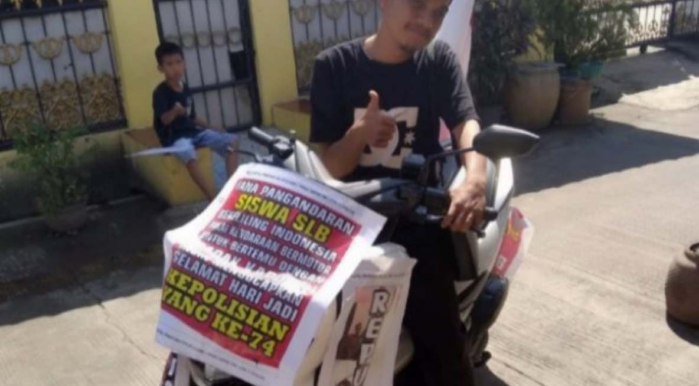

Yana, Penyandang Tunalaras yang Berani Berjuang untuk Hak-hak Disabilitas

Profil
Yana adalah seorang pemuda penyandang tunalaras berusia 29 tahun asal Kabupaten Pangandaran,
Jawa Barat. Meskipun memiliki keterbatasan fisik, Yana menunjukkan keberanian dan kepedulian
yang luar biasa terhadap sesama penyandang disabilitas.
Perjalanan Penuh Keberanian
Pada suatu hari, Yana melakukan perjalanan yang menginspirasi banyak orang: ia mengendarai
sepeda motornya sendirian dari Pangandaran menuju Markas Besar Polri di Jakarta. Jarak
ratusan kilometer ini ditempuh Yana demi satu tujuan mulia, yaitu bertemu langsung dengan Kapolri
Jenderal Idham Aziz. Tujuannya adalah untuk menyampaikan aspirasi teman-temannya di Sekolah Luar Biasa
(SLB) yang kesulitan mendapatkan pekerjaan layak dan aksesibilitas yang adil.
Selama perjalanannya, Yana menempelkan tulisan harapan dan bendera Merah Putih di motornya,
menjadi simbol perjuangan dan kecintaannya pada tanah air. Aksi ini murni berangkat dari inisiatif pribadinya,
tanpa paksaan atau dukungan finansial dari pihak lain. Ia hanya ingin bersilaturahmi dan menyampaikan harapan
besar tentang pentingnya perhatian terhadap penyandang disabilitas dalam memperoleh pekerjaan.
Dampak dan Pesan Inspiratif
Aksi berani Yana ini berhasil menarik perhatian publik dan menunjukkan bahwa suara penyandang tunalaras juga sangat
penting dan perlu didengar dalam perumusan kebijakan publik. Yana membuktikan bahwa keterbatasan fisik tidak menghalangi
seseorang untuk menjadi agen perubahan dan menyuarakan keadilan bagi komunitasnya.
“Saya ingin menyampaikan harapan yang teramat besar soal susahnya mencari pekerjaan bagi penyandang disabilitas.”
Kisah Yana adalah bukti nyata bahwa dengan keberanian dan inisiatif, individu penyandang disabilitas mampu membuka ruang
dialog dan mendorong kebijakan yang lebih inklusif, memastikan bahwa tidak ada yang tertinggal dalam pembangunan masyarakat